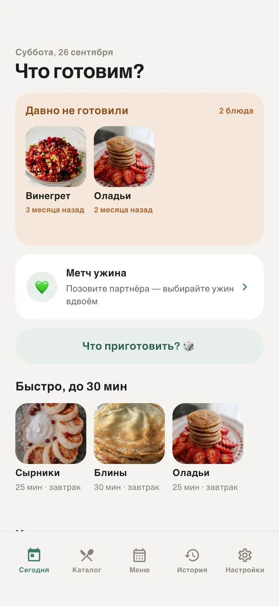
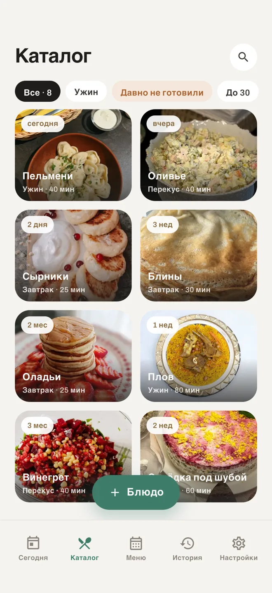
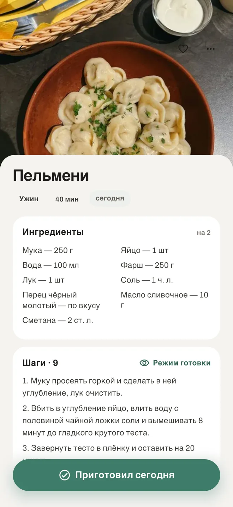
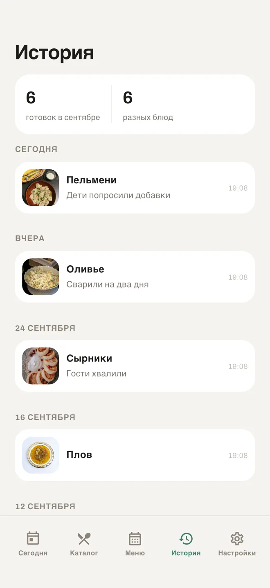
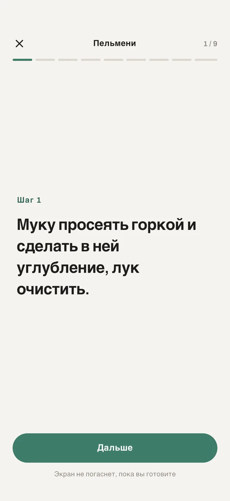
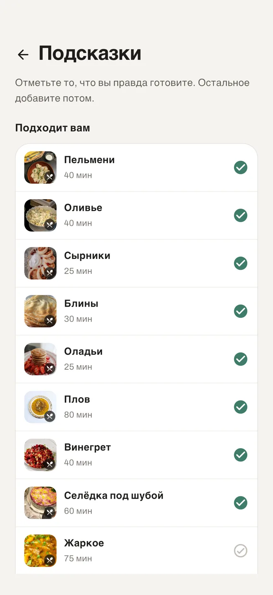

Блюда, которые вы готовите на самом деле
DoMenu — домашнее меню вашей семьи, а не сайт с чужими рецептами. Добавьте то, что реально оказывается на столе, отмечайте «Приготовил сегодня» — и приложение запомнит, чего давно не было.
iPhone и Android · бесплатно для старта · аккаунт не нужен

— Что сегодня на ужин?— Не знаю. Что-нибудь.
А запечённую рыбу, которую все любят, не делали три месяца. Дело никогда не было в нехватке рецептов: просто у семейного репертуара нет памяти. DoMenu её даёт.
Как это работает
Три нажатия — и приложение начинает помнить за вас
Добавьте блюдо за 15 секунд
Достаточно названия. Фото, время, продукты и шаги можно дописать потом — или не дописывать вовсе.
Отметьте «Приготовил сегодня»
Одна кнопка в карточке блюда. Дата и, если хочется, заметка: «в следующий раз меньше соли».
Приложение напомнит
«Винегрет — 3 месяца назад». Блок «Давно не готовили» сам поднимает то, что выпало из головы.
Свои блюда, а не чужие рецепты
Каталог с фото, категориями и временем готовки. Поиск и фильтры под то, как вы на самом деле выбираете: «давно не готовили», «до 30 минут», «завтрак».

Рецепт помещается на один экран
Продукты и шаги живут внутри блюда — шпаргалка, которую пишут себе, а не статья с историей из детства сверху.

История по дням
Что готовили и когда, со сводкой за месяц. Без графиков, калорий и оценок, которых никто не просил.

Режим готовки
Крупные шаги, экран не гаснет. Потому что руки в тесте, а телефон лежит на столешнице.

Стартовый набор, чтобы каталог не начинался с пустоты
Отметьте блюда своей кухни из готовой подборки — двадцать нажатий, и каталог уже похож на вашу кухню.

Premium
Ужин выбирают вдвоём
Метч ужина — колода ваших же блюд на двоих. Каждый свайпает, приложение показывает совпадение. Игра вместо переписки, которая заканчивается на «да мне всё равно».
- Только блюда из общего каталога
- Работает асинхронно: партнёр свайпнет вечером, решение дождётся
- Единственный тёмный экран в приложении — и он его заслужил
Приватность
Что вы готовите — не касается никого, кроме вас
Аккаунт для старта не нужен
Каталог, рецепты, история и напоминания работают на устройстве и без сети. Вход через Apple или Google — только когда захотите семью и синхронизацию.
Ни рекламы, ни трекинга
Никаких рекламных идентификаторов и SDK аналитики. Пока вы не вошли, приложение вообще ничего не отправляет на сервер.
Уйти можно в любой момент
Выгрузите всё в файл, а аккаунт удалите прямо из приложения — без писем нам и без ожидания.
Вопросы
Это ещё одно приложение с рецептами?
Нет. Рецептурные приложения начинаются с чужого рецепта, DoMenu — с блюда, которое вы и так готовите. Рецепт здесь короткая заметка внутри блюда, шпаргалка, а не статья.
Нужно ли заполнять карточку целиком?
Обязательно только название. Многие блюда так и живут — название, фото и всё; этого хватает, чтобы приложение отслеживало, чего давно не было.
Работает ли без интернета?
Да. Каталог живёт на устройстве. Синхронизация и общий каталог появляются, когда вы входите и включаете Premium.
Как устроена оплата Premium?
Автопродляемая подписка на год или на месяц, первые 7 дней бесплатно. Одна подписка на всю семью. Управлять и отменять — в настройках аккаунта App Store или Google Play.
На каких языках приложение?
Русский и английский, стартовые наборы блюд — под разные кухни.
DoMenu почти готов
Оставьте e-mail — напишем ровно один раз, в день выхода в App Store и Google Play.